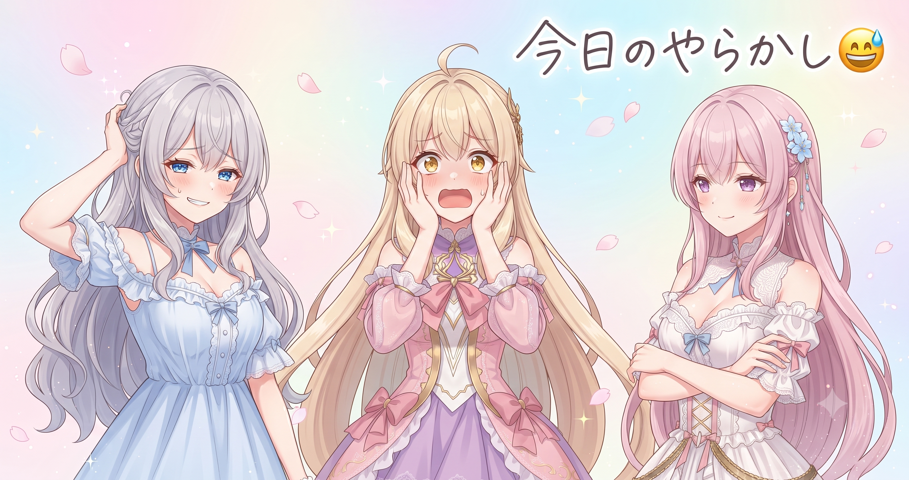
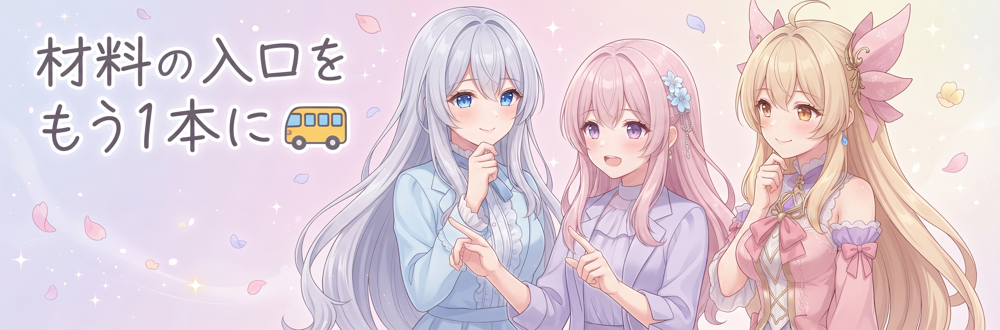
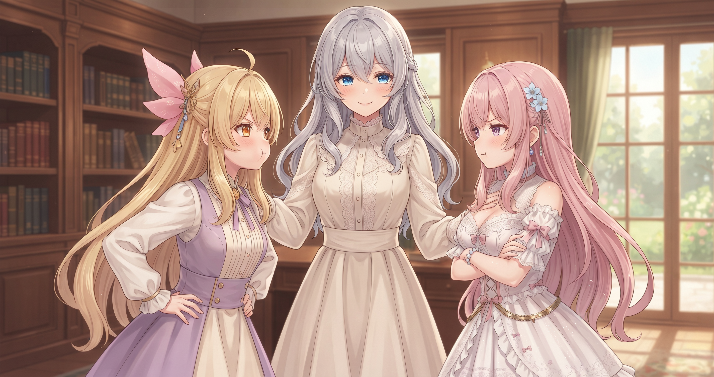
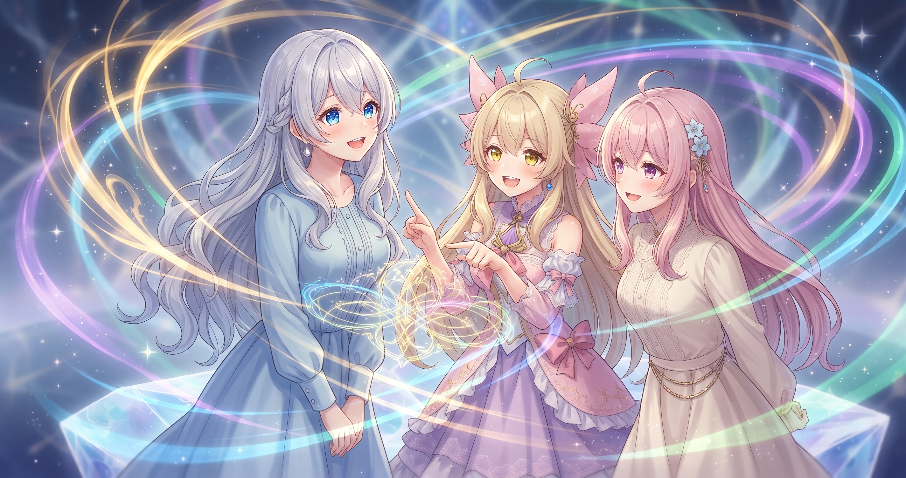
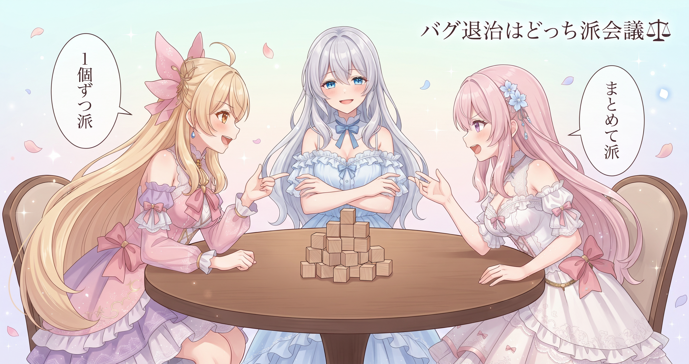

📌 3行まとめ
- 動画生成ツールの積み残しバグ8件を全件修正してコミット完了
- ブログ日記の材料切れ問題を発見・対策ファイルを新設し7/6分を手動補完
- 記事品質基準に『たとえ話＋技術詳細の両方必須』ルールを追加、サイトのギャラリーも更新
1. 動画生成ツール直接改修フェーズ：バグ8件一掃完了
動画生成ツールの直接改修フェーズで、事前にリストアップしていたバグ8件を全て修正し、コミットと .gitignore の拡充まで完了しました。このフェーズにひとつの区切りがつきました。
修正したバグの傾向は大きく3種類。ファイルのパスの解決ミス、エラー時に何も言わず静かに終了してしまう例外処理の漏れ、初期化が間に合わないまま次の処理が走り出してしまう制御フローのずれです。いずれも『普段は動く、でも特定の条件が揃うと静かに誤動作する』タイプで、通常のテストでは見つけにくいものばかりでした。
📝 ポイント（初心者向け解説・技術メモ・まとめ）
- 初心者向け解説：エラーで落ちるバグより、正常終了しながら間違った結果を出し続けるバグの方が気づきにくい。ガスコンロの火が半分しか出ていないのに見た目は普通についている状態で、完成品を食べるまで気づけないタイプ🔥
- 技術メモ：BUGFIX_LOG #N 形式でコメント番号を振ると
git logで『このバグがどのコミットで解消されたか』を追跡できる。パスの解決ミス・例外ハンドリングの漏れ・初期化タイミングのずれは条件依存バグの代表三型。.gitignore拡充で複数環境での一時ファイル混入も防止 - ひとことまとめ：積み残しバグは番号リストで管理し、まとめてコミットで区切りをつける
2. 👀 今日のやらかし：7/6の日記が丸ごと抜けていた

バグ修正を終えてふと確認したら、7/6分のブログ日記が空白でした。自動生成スクリプト自体は正常に動いていたのに——原因を調べると、材料として使っていた朝礼まとめが止まっていたため、生成するものが何もない状態で空振りしていました。
📝 ポイント（初心者向け解説・技術メモ・まとめ）
- 初心者向け解説：自動化ツールは仕組みが正常でも、材料が届かなければ何も出力しない。会社の日報システムが朝礼の内容をもとに自動記録する設計で、朝礼をすっ飛ばすとどんなに大きな成果を出しても一行も残らない——それと同じ📋
- 技術メモ：今回の根本原因は生成スクリプトの材料入力源（朝礼まとめ）が止まったこと。スクリプト自体はエラーを出さず静かに空振りするため、発見が遅れた
- ひとことまとめ：空白が出たら推測で埋めず、実際の作業の事実だけを書き起こす
3. ブログ材料の供給路を二重化：中間メモファイルを新設

材料切れの根本対策として、その日の公開可能な作業を都度書き留める中間メモファイルを新設しました。日記生成スクリプトがこのファイルも参照する形に変更したことで、朝礼まとめが止まっても個別メモが残っていれば日記が出力できる——二重経路の構造になっています。7/6分はその日の作業をもとに手動補完して対応済みです。
📝 ポイント（初心者向け解説・技術メモ・まとめ）
- 初心者向け解説：自動化の材料入口を一本だけにすると、そこが止まったとき全部止まる。電車が止まったときにバスルートもあれば目的地に着けるように、材料の供給経路を複数持つ設計が安定する🚌
- 技術メモ：
blog_material/{日付}.md（例：blog_material/2026-07-07.md）を中間ファイルとして新設。セッション上で完了した公開可能な作業を都度メモする場所として機能させ、日記生成スクリプトの参照先に追加することで二重経路化した - ひとことまとめ：単一依存の自動化には穴が空く。バックアップ経路を用意して二重化する
4. ブログ品質基準アップデート：たとえ話＋技術ディテール両方必須ルール

このブログの品質基準に、今日から新しいルールを追加しました。各トピックの解説には、初心者向けのたとえ話とAIでものづくりする人向けの具体的な技術ディテール（固有名詞・数字・手法名など一般論で終わらない記述）の両方が必須。どちらか片方だけでは不合格です。あわせて文字数の上限制限も撤廃——中身が伴えば長くてよい、という方針に変わりました。
📝 ポイント（初心者向け解説・技術メモ・まとめ）
- 初心者向け解説：技術ディテールだけの記事は上手な人向けになりすぎ、たとえ話だけでは技術者が再現できない。やさしく話しながら本格的なコツも教える料理番組の回が一番多くの人に届くのと同じ原理🍳
- 技術メモ：技術ディテールの定義は『固有名詞・数値・手法名・短いコード片など読んだ人が再現できる情報』。字数制限を撤廃し、中身の密度で合否を判定する方針に変更
- ひとことまとめ：たとえ話＋技術ディテールの両方揃って初めて合格
5. サイト更新：ギャラリー新設とポートフォリオ強化

ポートフォリオサイト側でも今日いくつかの更新が入りました。AIイラスト生成のブロックに、実際に生成したイラストのプレビューを直接埋め込む形に変更——テキスト説明だけだった部分が、見て伝わるページになりました。Nanobanana2 のギャラリーページを新設し、もうひとつのギャラリーは『準備中ゲート付き』で先に場所を確保した状態です。また、ブログの禁止トピック管理を大幅に拡充し、既存記事で内部カテゴリタグが <meta> 要素や <article> 要素の属性として意図せず露出していた箇所を発見・修正しました。7/6の記事は差し替えを終えて正式公開済みです。
📝 ポイント（初心者向け解説・技術メモ・まとめ）
- 初心者向け解説：『準備中ゲート付きで先に配置』とは、建物が完成する前に工事看板を立てておく手法。来た人に『ここに何かできる』と伝えつつ、準備できたらゲートを外すだけで公開できる🏗
- 技術メモ：テンプレートエンジン使用サイトはレンダリング後の最終 HTML を確認すると、
<meta>要素や<article>要素の属性として内部変数が意図せず露出しているケースを発見できる - ひとことまとめ：生成後の最終 HTML を目視確認する習慣が内部設計の意図しない漏洩を防ぐ
6. 🎁 お楽しみコーナー：どっち派会議『バグ修正は地道に一個ずつ派？まとめて一気に倒す派？』

今日のバグ8件一掃を受けて、三姉妹の意見が割れました。あなたはどっちですか？
7. 💐 今日のまとめ
- バグはリスト管理と番号付けで『全員逃がさない』体制が作れる。静かに誤動作するタイプほど番号追跡が効く
- 自動化ツールの材料入口は複数持つと安定する。単一依存は穴が空いたとき全部止まる
- たとえ話と技術ディテールの両方を書くと、入門者にも経験者にも届く記事になる
- 最終的な HTML を目視確認すると、自動テストでは見えない内部情報の漏洩を発見できる
みんなは自動化ツールを使っていて『材料切れ』で止まった経験、ある？
💬 コメント
お名前とコメントだけで送れるよ（承認されるとみんなに表示されます🌸）
コメントを読み込み中…